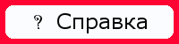

Создание смайлика
Сма́йлик, смайл (англ. smiley), реже эмотико́н (англ. emoticon), эмотико́нка, эмоцио́н — пиктограмма, изображающая эмоцию. Чаще всего составляется из типографских знаков. Смайлик изображается в виде жёлтого круга с двумя чёрными точками, представляющими глаза, и чёрной дугой, символизирующей рот. Распространение смайлик получил в Интернете и SMS, однако в последнее время используется повсеместно.
Смайлы обозначают интернациональные понятия, поэтому они не воспроизводят текущую речь, не отображают грамматических, фонетических и др. особенностей естественного языка. Смайлы можно отнести к паралингвистическим средствам письменной коммуникации, или к таким средствам, которые не являются речевыми единицами, но сопутствуют последним с целью уточнения, конкретизации смысла основного сообщения.
Смайлики предназначены для того, чтобы более богато и разнообразно дополнять смысл высказывания, уточнять его экспрессивно-интонационную окраску.
При общении в рунете они используются, как правило, попутно с кириллической графикой, включены непосредственно в структуру высказывания, отделяются от единиц высказывания пробелами или запятыми.
Цель урока
Нарисовать смайлик.
Задачи
- научиться работать с инструментами выделения, слоями;
- научиться создавать смайлики.
Требования к уровню подготовки обучающихся
Должны знать: инструменты и возможности редактора.
Должны уметь: создавать изображения.
Этапы работы
Учебный материал. Ознакомьтесь, пожалуйста, с разделами справки.
|  |
1. Запускаем GIMP.
2. Создаем новое изображение 600×600.
3. Создаем Эллиптическое выделение и заливаем его черным цветом.
4. Создаем новый слой, выделяем с помощью инструмента Эллиптическое выделение. Меню Выделение - Уменьшить - указываем размер - 5-10 рх. Заливаем выделение желтым цветом.
5. Создаем новый слой, на нем создаем Прямоугольное выделение, которое заливаем черным цветом.
6. На этом слое с помощью инструмента Свободное выделение или Эллиптическое выделение аккуратно рисуем рот и закрашиваем нужным цветом. Стараемся не заходить за черную линию.
7. Берем инструмент Прямоугольное выделение, снова выделяем и заливаем черным цветом полоску рта.
8. В настройках у инструмента Эллиптическое выделение выставляем режим Пересечь с текущим выделением. Делаем выделение, как показано на рисунке ниже, и заливаем цветом.
9. Рисуем глаза. Для этого создаем новый слой. На нем создаем два Эллиптических выделения, заливаем их белым цветом.
10. Внутри этих выделений создаем еще два Эллиптических выделения, заливаем их черным цветом.
11. Получается такой смайлик.